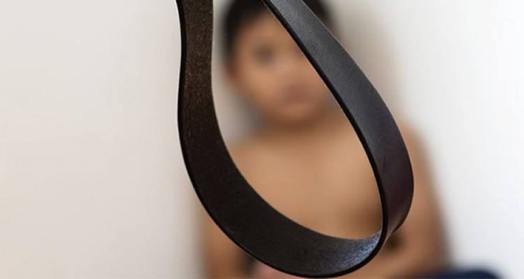

随着多元文化的融合，很多其他国家的节日在中国中走红，其中不乏让人较为热衷的情人节 、愚人节、圣诞节等等。而在诸多洋节当中，有个节日较少为中国人所知，它就是源自美国威斯康星州的“诚实节”。它比愚人节更可贵，比情人节更忠贞，比圣诞节更动人心魄。
5月2日是美国威斯康星州的“诚实节”，又称“不说谎纪念日”。这是为了纪念一个年仅8岁的因坚持真理而献身的男孩而设立的。这个男孩名叫埃默纽•旦南。埃默纽5岁时，不幸父母双亡，成了无依无靠的孤儿，后被诺顿夫妇收养为义子。埃默纽8岁时，一天晚上他刚睡着，就被楼下一阵敲打声惊醒。他急忙下楼，只见继父和继母正在谋杀一个寄宿在小酒店的小贩……第二天一早，他的继父来到他的房间，教他在警察面前说谎。埃默纽回答说，他不想说谎话。诺顿夫妇就把他的双手吊在梁上，用柳条抽打他，逼他说谎。抽打了两个小时，埃默纽在呻吟回答：“爸爸……饶了我吧……我不想说谎……”最后竟被活活打死。
事后，诺顿夫妇受到法律的严惩。市政府为埃默纽建造一块纪念碑和一座塑像。纪念碑上写着：“怀念为真理而屈死的人，他在天堂永生。”威斯康星州政府决定每年5月2日为“诚实节”，以永久纪念这个诚实而勇敢的孩子。每年5月2日，美国孩子都要举行各种活动，来庆祝一个具有特殊意义的节日-诚实节。
最初呱呱坠地时，秉承着的是一份混沌的单纯，喜怒哀乐总是不加掩饰的流露。而后，渐渐长大，看到并没有穿衣服的国王，我们失去了说出事实的勇气。很多时候，敢于戳穿这一切的，总是孩子。成人的世界，灯红酒绿、推杯换盏，生于自由却囿于规则的我们，越来越少袒露心声。渐渐的，渐渐的，在行过的路上我们失去了自己，甚至对未来的方向也有了怀疑。不忘初心，方得始终，对自己真正的敞开心扉，才能最大意义上成全自己的人生。
1、信，乃“五常”之一，诚实守信是做人的道德准则之一；
2、每天都对自己诚实，摘下面具做最真实的自己吧！